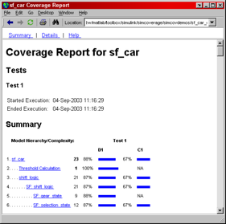

This demonstration explains the features of the coverage tool that simplify the generation of coverage data spanning a set of coverage runs.
This demonstration uses the sf_car model to explain the settings and options to accumulate coverage. Inside this model is a signal builder block that is configured with four sets of simulation data. By default the simulation uses the first set of data.
NOTE: Commands that manipulate user dialogs in this demonstration can be ignored. They simulate user interactions with the dialog.
cv_demo_helper_a(1); % ignore
Start by opening the coverage settings dialog from the Tools menu on the Simulink editor. Selecting the "Enable Coverage Reporting" checkbox at the top of the Coverage pane enables model coverage for the next simulation. It also activates the Coverage metrics check boxes beneath it for selecting the types of coverage to perform.
From the Coverage metrics check boxes in the Coverage pane of the Coverage Settings dialog, select Condition Coverage.
In the Results pane of the Coverage Settings dialog, select the checkbox "Save cumulative results to workspace." This setting tells the coverage tool to maintain and update a running total of the coverage results. At the end of each simulation the running total is updated with the most recent results.
On the Report pane of the Coverage Settings dialog, make sure that the check box "Generate HTML report" is selected. The Report pane contains options for reporting the coverage based on the cumulative results.
On the Coverage Settings dialog, select OK to apply the settings and close the settings dialog.
Begin simulation and observe the resulting model coverage report. Notice that it has no cumulative results and the report is the same as it would be for a single simulation.
Begin build for model "sf_car"
End build for model "sf_car"
covdata = ... cvdata
id: 698
type: TEST_DATA
test: cvtest object
rootID: 699
checksum: [4x1 struct]
startTime: 04-Sep-2003 18:20:03
stopTime: 04-Sep-2003 18:20:03
metrics: [1x1 struct]
Before simulating again, double-click the User Inputs block. In the resulting Signal builder dialog, make sure that the Gradual Acceleration tab is selected as the active data set. Testing with this input data set may reveal design design aspects that we were not tested for in the first simulation.
cv_demo_helper_a(8); % ignore
After you run the second simulation the generated coverage report has three columns: Current Run, Delta, and Cumulative. The Current Run column displays the coverage from the current simulation. The Delta column displays the coverage exposed by the current simulation that was not achieved in the cumulative results before this simulation. The Cumulative column gives the current cumulative coverage numbers.
covdata = ... cvdata
id: 980
type: TEST_DATA
test: cvtest object
rootID: 699
checksum: [4x1 struct]
startTime: 04-Sep-2003 18:20:19
stopTime: 04-Sep-2003 18:20:20
metrics: [1x1 struct]
Use the cvsave command to store coverage results to the file demo_cov_data.cvt. This creates a text file that contains information about the structure of the model and the execution counts for each coverage point.
When the cvsave command is invoked with the name of a model, all of the coverage data for that model is written to disk. A data object is created for the results of each simulation and another object for the cumulative coverage results.
cvsave('demo_cov_data','sf_car');
Close and reopen the model. This clears all coverage data from memory. Attempting to access a cleared data object in the MATLAB workspace causes an error message.
close_system('sf_car',0);
Restore all coverage data, including cumulative data, with the cvload command. Make sure the model is open before restoring the data so that restored coverage data elements are automatically associated with active model elements.
The optional second argument to cvload is a Boolean flag that indicates if the cumulative coverage data should be loaded from file. If this is enabled any existing cumulative coverage data in memory is overwritten. In this case, the model was closed and reopened, so there is no coverage data to overwrite.
open_system('sf_car') % Open the model [testObjs,dataObjs] = cvload('demo_cov_data',1) % Load the coverage data
testObjs =
[1x1 cvtest] [1x1 cvtest] {}
dataObjs =
[1x1 cvdata] [1x1 cvdata] [1x1 cvdata]
Restore the coverage settings and cumulative report options set in prior steps and run another simulation using the Hard braking data set in Signal Builder dialog.
As expected, the cumulative report format is used because of the cumulative data restored prior to simulation.
covdata = ... cvdata
id: 1520
type: TEST_DATA
test: cvtest object
rootID: 1236
checksum: [4x1 struct]
startTime: 04-Sep-2003 18:20:41
stopTime: 04-Sep-2003 18:20:41
metrics: [1x1 struct]
Close the model to end the demonstration.
close_system('sf_car',0);